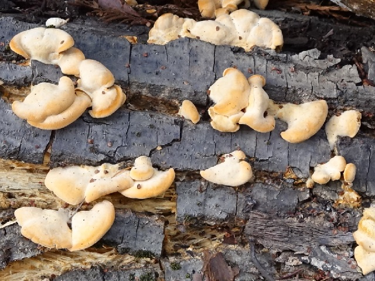

Orange Mock Oyster
This fungus is called "orange mock oyster". I saw it in February 2021, at Huddart Park in San Mateo County, California. (Thanks to my brother for helping me identify it.) Orange mock oyster grows on decaying wood, especially oak.